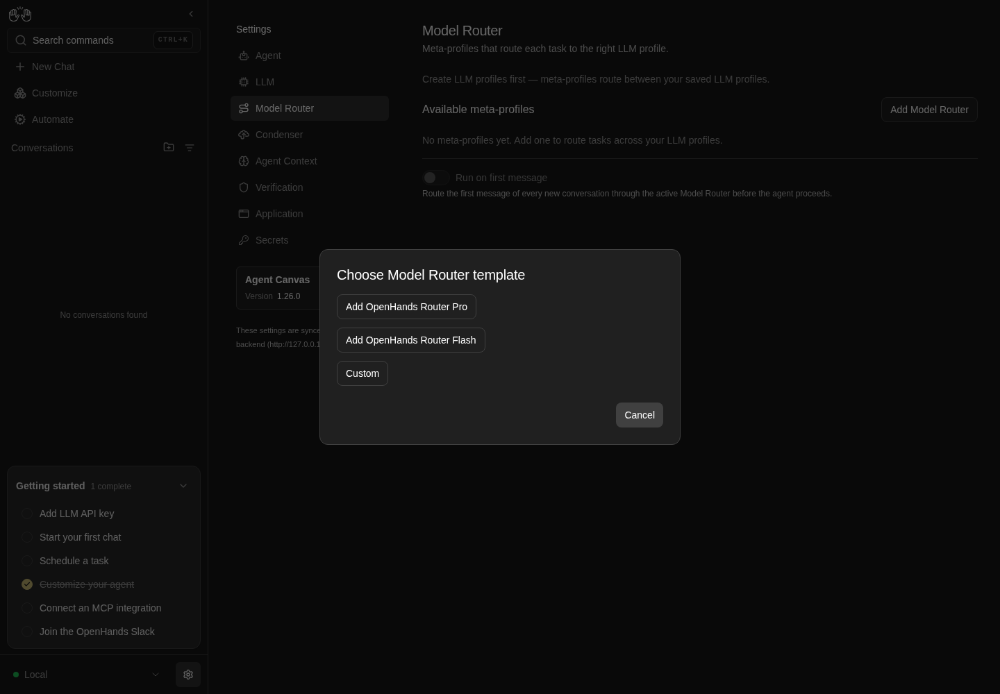

How to get to it
- Sidebar settings gear (
backend-selector-settings-link), then Model Router in the settings navigation (sidebar-settings-/settings/meta-llm, between LLM and Condenser). Used byF12.page. - Direct URL
/settings/meta-llm. Used by most recipes (browser goto). - Command menu (
Control+korMeta+k, orcommand-menu-triggerin the sidebar): search "Model Router" (or "router", "meta"), choose Model Router ("Meta-profiles that route each task to the right LLM profile."). Used byF12.page. - Per-router actions: the row
...button (meta-profile-menu-trigger-<name>), then Edit / Set active / Delete. - The effect of a router is seen in a conversation started from the home composer (
F12.route-first-message; see F05/F06 for the composer and activity rendering).
Before you start
Start with the common launch and health checks, then follow this family’s preconditions in order. Recipes share the fixtures and state named below.
Preconditions:
F12.empty-statesneeds a freshlaunch --newwithonboard --skipdone and beforellm preset deepseek(no LLM profiles, no routers).- Everything after it needs
control-openhands llm preset deepseek --api-key-file <key file>(profilesdeepseek-flashanddeepseek-pro), no meta-profile namedQA_*(control-openhands api GET /api/meta-profiles), no provider connection (control-openhands api GET /api/llm/provider-connectionsis[]) and no LLM profile nameddeepseek-chat(control-openhands api GET /api/profiles). F12.add-connectionandF12.route-first-messageuse the DeepSeek key file; never print it.- Blocked here:
F12.unsupported(needs an agent server older than software-agent-sdk #3744, for examplelaunch --new --sdk-ref <older release>),F12.cloud(needs a Cloud account, with and without an organization) andF12.load-error(needs/api/meta-profilesto fail while the rest of the agent server answers;service stop agent-serverswaps the whole app for the Manage backends card instead). - Desktop viewport unless a bullet says otherwise.
Behavior inventory
25 stable behavior IDs and their expected behavior
F12.pageSettings → Model Router opens/settings/meta-llmwith the subtitleMeta-profiles that route each task to the right LLM profile.; the command menu offers a Model Router command that opens it, like the other settings pages. Read recipe ↓F12.empty-stateswith no LLM profiles the page saysCreate LLM profiles first — meta-profiles route between your saved LLM profiles.; with no routers it saysNo meta-profiles yet. Add one to route tasks across your LLM profiles.and Run on first message is off and disabled. Read recipe ↓F12.load-errorwhen only the meta-profile request fails, a red generic error shows under the header.F12.unsupportedan agent server without/api/meta-profiles(404) showsThis backend doesn't support model routing yet. Update the agent server to manage meta-profiles.F12.clouda Cloud backend without an organization showsMeta-profiles are only available for local backends.; an organization-bound Cloud backend shows the full page.F12.template-chooserAdd Model Router opensChoose Model Router template(Add OpenHands Router Pro, Add OpenHands Router Flash, Custom, Cancel); Cancel, Escape and a backdrop click close it; Pro and Flash prefill the name, classifierminimax-m3, their own long routing prompt and the same 11-model table. Read recipe ↓F12.template-customCustom opens a blank editor; the placeholders show an example prompt and a two-line example model table. Read recipe ↓F12.editor-validationSave stays disabled until the name is valid, a classifier is set and the prompt contains{{ instance_text }}(spaces inside the braces optional). Read recipe ↓F12.duplicate-namea new router cannot take an existing router's name (A meta-profile with this name already exists..., Save disabled). Read recipe ↓F12.add-connectionAdd connection in the create editor opensAdd provider connection; saving it selects the new connection in the picker. Read recipe ↓F12.add-connection-cancelCancel inAdd provider connectioncloses it without creating a connection and keeps the editor's values and picker choice. Read recipe ↓F12.editor-cancelwhile the create or edit editor is open it replaces the list, Add Model Router and the switch; Cancel returns to the list without saving anything. Read recipe ↓F12.router-profileswith a connection picked under Create missing router LLM profiles using, Save creates an LLM profile<provider>/<name>linked to that connection for every model-table name (and the classifier) that does not exist yet; Don't create profiles creates none. Read recipe ↓F12.create-firstsaving the first router lists it, makes it Active and turns Run on first message on. Read recipe ↓F12.create-moresaving another router lists it and leaves the Active badge where it was. Read recipe ↓F12.listeach row shows the name,<classifier> · Direct prompt, an Active badge on the active router and a...menu; routers and the active choice survive a stack restart. Read recipe ↓F12.activateSet active toastsMeta-profile "<name>" activatedand moves the badge. Read recipe ↓F12.editEdit opensEdit meta-profilewith the name locked and no connection picker; changes persist. Read recipe ↓F12.deleteDelete asksAre you sure you want to delete "<name>"? This cannot be undone.; Cancel keeps the row, Delete removes it. Read recipe ↓F12.delete-activedeleting the active router leaves no router active; the switch shows off and disabled, and new conversations get neither the tool nor the first-message instruction. Read recipe ↓F12.run-first-message-togglethe switch saves immediately (no Save button, no toast) and survives a reload. Read recipe ↓F12.route-first-messagewith a router active and the switch on, a new conversation routes its first message (route_task_to_modelaction,Switched to profile <name>in the chat); with the switch off the tool is still attached but the instruction is absent. Read recipe ↓F12.light-themein a light colour theme the list heading and router names are readable. Read recipe ↓F12.phonethe list, template modal, editor and row menu fit a 390 px viewport without horizontal overflow. Read recipe ↓
Readable recipes
Read each script from top to bottom. Code is copied from the map; prose gives the action, expected observation, and conditions. <id>, <run> and similar placeholders stand for values from your own run. Short forms such as browser count continue the same control-openhands invocation; they are kept as documented.
Expected observations describe the recipe’s contract. Captures below selected recipes show representative real states from this snapshot; they do not mark every mapped behavior as passed. Follow cleanup before moving to another family.
No recipes match. Try another word or a behavior ID.
Open from navigation #
- NoteFrom
/run - Check
control-openhands browser click 'testid=backend-selector-settings-link' --expect-url '/settings' - Check
control-openhands browser click 'testid=sidebar-settings-/settings/meta-llm' --expect-url '/settings/meta-llm(\?|$)' - Check
control-openhands browser text 'testid=settings-page-subtitle' - Check
control-openhands browser attr 'testid=sidebar-settings-/settings/meta-llm' aria-current - ExpectThe subtitle is
Meta-profiles that route each task to the right LLM profile.andaria-currentispage.
Command menu #
- Do
control-openhands browser goto /(the previous bullet ends on
/settings/meta-llm, where the URL wait would pass at once), - Do
control-openhands browser press Control+k - Do
control-openhands browser type 'testid=command-menu >> role=combobox' 'Model Router' - Check
control-openhands browser snapshot 'testid=command-menu' - Note: the only option is
Model Router Meta-profiles that route each task to the right LLM profile. Go[selected]. - Do
control-openhands browser fill 'testid=command-menu >> role=combobox' router(and then
meta) keeps that single option (control-openhands browser count 'testid=command-menu >> role=option'is1). - Do
control-openhands browser press Enter - Wait
control-openhands browser wait-url '/settings/meta-llm(\?|$)' - Note
browser text 'testid=settings-page-subtitle'is the subtitle above.
Empty states #
- NoteOn the fresh run run
- Do
control-openhands browser goto /settings/meta-llm - Check
control-openhands browser text 'testid=meta-profile-no-llm-profiles' - Check
control-openhands browser text 'testid=meta-profile-empty' - Do
control-openhands browser eval "(()=>{const i=document.querySelector('[data-testid=meta-profile-run-at-conversation-start-switch]');return {checked:i.checked,disabled:i.disabled}})()" - ExpectThe texts are the two messages in Sub-features and the switch is
{checked:false, disabled:true}. - Do
control-openhands browser screenshot --feature F12.empty-states --name no-llm-profilesshows both messages above a greyed switch.
Template chooser #
- Do
control-openhands browser click 'testid=add-meta-profile' - Check
control-openhands browser snapshot 'role=dialog' - Note: dialog
Choose Model Router templatewith buttonsAdd OpenHands Router Pro,Add OpenHands Router Flash,Custom,Cancel. - Do
control-openhands browser click 'testid=meta-profile-template-cancel' - Check
control-openhands browser count 'testid=meta-profile-template-modal'is
0; reopen and - Do
control-openhands browser press Escape - Notegives
0too. - NoteReopen,
- Do
control-openhands browser click 'testid=meta-profile-template-router-pro' - Check
control-openhands browser value 'testid=meta-profile-name-input'(
openhands-router-pro), - Check
control-openhands browser value 'testid=meta-profile-classifier-input'(
minimax-m3), - Check
control-openhands browser eval "document.querySelector('[data-testid=meta-profile-model-table]').value.split('\n').length"(
11), - Check
control-openhands browser eval "document.querySelector('[data-testid=meta-profile-prompt-template]').value.includes('{{ instance_text }}')"(
true), - Check
control-openhands browser value 'testid=meta-profile-router-connection'(
Don't create profileswhile no connection exists) and - Check
control-openhands browser enabled 'testid=meta-profile-save'(
true). - NoteLeave with
- Do
control-openhands browser click 'testid=meta-profile-cancel' - ExpectThe Flash template (
testid=meta-profile-template-router-flash) givesopenhands-router-flash, the same classifier and identical table, and a different prompt (about 5,900 characters against Pro's 5,000; compare withbrowser eval "document.querySelector('[data-testid=meta-profile-prompt-template]').value.length"). - ExpectA backdrop click also closes the chooser: reopen it and
- Do
control-openhands browser mouse-click 20 980 - Notethen
countis0.

Choose Model Router template dialog offers OpenHands Router Pro, OpenHands Router Flash, Custom and Cancel.
Representative documentation capture, not a complete run of this recipe or family. Captured on an isolated local backend at desktop viewport using the current main checkout.
How this screenshot was taken
canvas: 1.26.0 · agent server: 1.53.0 · sdk: 1.53.0 · automation: 1.19.0
OH_VERIFY_RUN="$OH_VERIFY_RUN" control-openhands browser goto /settings/meta-llm
OH_VERIFY_RUN="$OH_VERIFY_RUN" control-openhands browser click testid=add-meta-profile
OH_VERIFY_RUN="$OH_VERIFY_RUN" control-openhands browser snapshot role=dialog
OH_VERIFY_RUN="$OH_VERIFY_RUN" control-openhands browser screenshot --feature F12.template-chooser --name router-template-dialogCustom template #
- Do
control-openhands browser click 'testid=add-meta-profile' - Do
control-openhands browser click 'testid=meta-profile-template-custom' - Check
control-openhands browser value - Noteon
testid=meta-profile-name-input,testid=meta-profile-classifier-input,testid=meta-profile-prompt-templateandtestid=meta-profile-model-table(all""), - Check
control-openhands browser enabled 'testid=meta-profile-save'(
false) and - Do
control-openhands browser eval "document.querySelector('[data-testid=meta-profile-model-table]').placeholder.split('\n')" - Note: two example rows,
["- GPT-5.4: strong for coding and reasoning", "- MiniMax-M3: efficient fallback"], joined by a real line break (#18035), and - Do
control-openhands browser screenshot --feature F12.template-custom --name custom-emptyshows them on two lines under the prompt placeholder, which breaks lines the same way.
Validation #
- NoteIn that Custom editor run
- Do
control-openhands browser fill 'testid=meta-profile-name-input' 'QA router!' - Do
control-openhands browser fill 'testid=meta-profile-classifier-input' qa-classifier - Do
control-openhands browser fill 'testid=meta-profile-prompt-template' 'Pick a model for: {{ instance_text }}' - Check
control-openhands browser enabled 'testid=meta-profile-save'(
false: bad name). - Do
control-openhands browser fill 'testid=meta-profile-name-input' QA_router - Noteturns it
true; - Do
control-openhands browser fill 'testid=meta-profile-prompt-template' 'Pick a model for: {{ task }}' - Noteturns it
false;'Pick a model for: {{instance_text}}'turns ittrueagain; - Do
control-openhands browser fill 'testid=meta-profile-classifier-input' '' - Noteturns it
false. - NoteKeep the editor open.
Add a connection #
- Do
control-openhands browser click 'testid=meta-profile-add-provider-connection' - Do
control-openhands browser fill 'testid=provider-connection-name-input' QA_deepseek - Do
control-openhands browser fill 'testid=provider-connection-provider-input' deepseek - Do
control-openhands browser click 'role=option[name="deepseek"]' - Check
control-openhands browser fill 'testid=provider-connection-api-key-input' --value-file <key file> - Do
control-openhands browser click 'testid=provider-connection-submit' - Wait
control-openhands browser wait 'testid=provider-connection-modal' --state detached - Check
control-openhands browser toastshas
Connection "QA_deepseek" createdand - Check
control-openhands browser value 'testid=meta-profile-router-connection'is
QA_deepseek (deepseek).
Create the first router #
- NoteWrite the prompt and table to files:
printf 'You route tasks. Reply only with JSON {"model": "<name>", "reason": "<short>"} using one name from this table:\n{{ model_table }}\n\nTask:\n{{ instance_text }}' > <prompt file>andprintf -- '- deepseek-flash: cheap, for simple tasks\n- deepseek-pro: stronger, for hard tasks\n- deepseek-chat: general chat' > <table file>. - Do
control-openhands browser click 'testid=meta-profile-classifier-input' - Do
control-openhands browser click 'role=option[name="deepseek-flash"]' - Do
control-openhands browser fill 'testid=meta-profile-name-input' QA_router - Check
control-openhands browser fill 'testid=meta-profile-prompt-template' --value-file <prompt file> - Check
control-openhands browser fill 'testid=meta-profile-model-table' --value-file <table file> - Do
control-openhands browser click 'testid=meta-profile-save' - Wait
control-openhands browser wait-text 'Meta-profile "QA_router" saved' - NoteAfter
- Do
control-openhands browser reload - Check
control-openhands browser text 'testid=meta-profile-row-QA_router'is
QA_router\ndeepseek-flash · Direct prompt\nActive, the switchevalabove returns{checked:true, disabled:false}, - Check
control-openhands api GET /api/meta-profileshas
active_meta_profileQA_router, - Check
control-openhands api GET /api/settingshas
"run_router_at_conversation_start": true, and - Check
control-openhands api GET /api/profileshas a new
deepseek-chat(deepseek/deepseek-chat,provider_connection_idset) whiledeepseek-flash/deepseek-proare unchanged. - Do
control-openhands browser screenshot --feature F12.create-first --name list-after-createshows the row with the gold Active badge and the switch on.
Duplicate name #
- Do
control-openhands browser click 'testid=add-meta-profile' - Do
control-openhands browser click 'testid=meta-profile-template-custom' - Do
control-openhands browser fill 'testid=meta-profile-name-input' QA_router - Check
control-openhands browser text 'testid=meta-profile-name-taken'(
A meta-profile with this name already exists. Choose a different name, or edit the existing one.), pick classifierdeepseek-proas above, fill the prompt with'Route: {{ instance_text }}', and - Check
control-openhands browser enabled 'testid=meta-profile-save'(
false). - Do
control-openhands browser fill 'testid=meta-profile-name-input' QA_router_2 - Notemakes
- Check
control-openhands browser count 'testid=meta-profile-name-taken' - Note
0and Savetrue. - NoteClick
testid=meta-profile-cancel; - Check
control-openhands browser count 'testid=meta-profile-row-QA_router_2'is
0.
"Don't create profiles" in a template #
- Do
control-openhands browser click 'testid=add-meta-profile' - Do
control-openhands browser click 'testid=meta-profile-template-router-pro' - Check
control-openhands browser value 'testid=meta-profile-router-connection'(
QA_deepseek (deepseek), preselected), - Do
control-openhands browser click 'testid=meta-profile-router-connection' - Do
control-openhands browser click "role=option[name=\"Don't create profiles\"]" --observe 'testid=meta-profile-router-connection' --observe-ms 1500 - ExpectThe picker stays on
Don't create profiles: the observed states areQA_deepseek (deepseek)at 0 ms andDon't create profilesabout 300 ms later, with nothing after it, and - Check
control-openhands browser value 'testid=meta-profile-router-connection'is
Don't create profiles. - NoteCancel the editor (
control-openhands browser click 'testid=meta-profile-cancel');F12.create-moresaves a template with this choice. - ExpectThe Custom template starts on
Don't create profileseven with a connection present; there, pickrole=option[name="QA_deepseek (deepseek)"]first and thenDon't create profiles: the second pick sticks. - NoteCancel the editor.
Create another router without new profiles #
- Do
control-openhands browser click 'testid=add-meta-profile' - Do
control-openhands browser click 'testid=meta-profile-template-router-flash' - Check
control-openhands browser value 'testid=meta-profile-router-connection'(
QA_deepseek (deepseek), preselected), - Do
control-openhands browser fill 'testid=meta-profile-name-input' QA_router_flash - Do
control-openhands browser click 'testid=meta-profile-router-connection' - Do
control-openhands browser click "role=option[name=\"Don't create profiles\"]" - Check
control-openhands browser value 'testid=meta-profile-router-connection'(
Don't create profiles). - Do
control-openhands browser click 'testid=meta-profile-save' - Wait
control-openhands browser wait-text 'Meta-profile "QA_router_flash" saved' - NoteAfter
- Do
control-openhands browser reload - Check
control-openhands browser text 'testid=meta-profile-list'is
QA_router\ndeepseek-flash · Direct prompt\nActive\nQA_router_flash\nminimax-m3 · Direct promptand - Check
control-openhands browser count 'testid=meta-profile-active-badge'is
1. - Check
control-openhands api GET /api/profiles - Notestill lists only
deepseek-chat,deepseek-flashanddeepseek-pro: none of the template's 11 models became a profile, soQA_router_flashnames a classifier (minimax-m3) that does not exist, which saving allows (see Gotchas).
Row menu and activate #
- Do
control-openhands browser click 'testid=meta-profile-menu-trigger-QA_router' - Check
control-openhands browser snapshot 'testid=meta-profile-actions-menu'(
menuitem "Edit",menuitem "Set active" [disabled],menuitem "Delete"); - Do
control-openhands browser press Escape - Notecloses it (
count0). - Do
control-openhands browser click 'testid=meta-profile-menu-trigger-QA_router_flash' - Do
control-openhands browser click 'testid=meta-profile-actions-menu >> testid=meta-profile-set-active' - Wait
control-openhands browser wait-text 'Meta-profile "QA_router_flash" activated' - NoteAfter
- Do
control-openhands browser reload - Check
control-openhands browser count 'testid=meta-profile-row-QA_router_flash >> testid=meta-profile-active-badge'is
1, the total badge count is1, andapi GET /api/meta-profilesagrees.
Edit #
- Do
control-openhands browser click 'testid=meta-profile-menu-trigger-QA_router' - Do
control-openhands browser click 'testid=meta-profile-actions-menu >> testid=meta-profile-edit' - Check
control-openhands browser text 'testid=meta-profile-editor >> role=heading'(
Edit meta-profile), - Check
control-openhands browser enabled 'testid=meta-profile-name-input'(
false), - Check
control-openhands browser count 'testid=meta-profile-router-connection'(
0). - NotePick classifier
deepseek-pro, filltestid=meta-profile-model-tablewith the first two table lines only, clicktestid=meta-profile-saveand - Wait
control-openhands browser wait-text 'Meta-profile "QA_router" saved' - ExpectAfter a reload the row reads
QA_router\ndeepseek-pro · Direct prompt, the badge stays onQA_router_flash, and - Check
control-openhands api GET /api/meta-profiles/QA_routershows the new classifier and table.
Cancel the connection dialog #
- Do
control-openhands browser click 'testid=add-meta-profile' - Do
control-openhands browser click 'testid=meta-profile-template-custom' - Do
control-openhands browser fill 'testid=meta-profile-name-input' QA_router_cancel - Do
control-openhands browser click 'testid=meta-profile-add-provider-connection' - Do
control-openhands browser fill 'testid=provider-connection-name-input' QA_unused - Do
control-openhands browser click 'role=dialog >> role=button[name="Cancel"]'(the Cancel button has no test id) and
- Wait
control-openhands browser wait 'testid=provider-connection-modal' --state detached - Note
browser value 'testid=meta-profile-name-input'is stillQA_router_cancel, the picker still readsDon't create profiles, and - Check
control-openhands api GET /api/llm/provider-connectionshas no
QA_unused(display_nameis the field).
Leave the editor #
- NoteIn that editor
- Check
control-openhands browser count - Noteon
testid=meta-profile-list,testid=add-meta-profileandtestid=meta-profile-run-at-conversation-startis0each. - NotePick classifier
deepseek-flash, fill the prompt'Pick: {{ instance_text }}', clicktestid=meta-profile-cancel:count 'testid=meta-profile-list'is1,count 'testid=meta-profile-row-QA_router_cancel'is0andapi GET /api/meta-profileshas noQA_router_cancel. - NoteIn edit mode (row menu → Edit on
QA_router), - Do
control-openhands browser fill 'testid=meta-profile-prompt-template' 'Changed: {{ instance_text }}' - Notethen Cancel leaves
- Check
control-openhands api GET /api/meta-profiles/QA_router - Notewith its saved
prompt_template.
Run on first message #
- Do
control-openhands browser click 'testid=meta-profile-run-at-conversation-start >> text=Run on first message' - Do
control-openhands browser reload - Noteand the switch
eval:checkedflips and stays flipped;api GET /api/settingsshowsrun_router_at_conversation_startwith the same value; - Check
control-openhands browser toastsis empty.
- NoteClick again to restore
true.
Routing in a conversation #
- NoteMake
QA_routeractive (row menu → Set active,wait-text 'Meta-profile "QA_router" activated') with the switch on. - Wait
control-openhands conversation start --prompt "Run echo routed in the terminal and tell me its output." --wait --timeout 300 - Check
control-openhands conversation events <id> --kinds ActionEvent,ObservationEvent,MessageEvent(
<id>from the start output). - ExpectThe first action is
route_task_to_model, its observation startsClassified task as 'model: deepseek-flash' and switched to LLM profile 'deepseek-flash', then the terminal runsecho routed. - NoteOn the conversation page
- Wait
control-openhands browser wait-text 'Switched to profile' - Notesucceeds and
- Do
control-openhands browser screenshot --feature F12.route-first-message --name conversationshows the
Switched to profile deepseek-flashline above the answer. - Check
control-openhands api GET "/api/conversations/<id>/events/search?limit=1" --max-bytes 200000(the system prompt) contains
ROUTE_AT_CONVERSATION_STARTand"route_task_to_model". - NoteSwitch Run on first message off (
control-openhands browser goto /settings/meta-llmfirst: the browser is on the conversation), start--prompt "Reply with only the word pong.", and the same GET contains"route_task_to_model"but noROUTE_AT_CONVERSATION_START; there is no route action.
Delete #
- Do
control-openhands browser goto /settings/meta-llm - Do
control-openhands browser click 'testid=meta-profile-menu-trigger-QA_router_flash' - Do
control-openhands browser click 'testid=meta-profile-actions-menu >> testid=meta-profile-delete' - Check
control-openhands browser snapshot 'role=dialog'(
Delete meta-profile,Are you sure you want to delete "QA_router_flash"? This cannot be undone., Cancel, Delete). - Do
control-openhands browser click 'role=dialog >> role=button[name="Cancel"]' - Notekeeps the row (
count1). - NoteRepeat the menu click, then
- Do
control-openhands browser click 'testid=delete-meta-profile-confirm' - Wait
control-openhands browser wait-text 'Meta-profile "QA_router_flash" deleted' - Do
control-openhands browser reload - Check
control-openhands browser count 'testid=meta-profile-row-QA_router_flash'is
0.
Delete the active router #
- NoteWith
QA_routeractive and the switch on, delete it the same way (wait-text 'Meta-profile "QA_router" deleted'). - ExpectAfter a reload
testid=meta-profile-emptyis back, the switchevalis{checked:false, disabled:true}andapi GET /api/meta-profileshasactive_meta_profilenull, whileapi GET /api/settingsstill has"run_router_at_conversation_start": true. - ExpectA new
conversation start --prompt "Reply with only the word pong." --waithas neither"route_task_to_model"norROUTE_AT_CONVERSATION_STARTin its events/search output.
Light theme #
- ExpectNo router is left after
F12.delete-active, whose lastconversation startleft the browser on a conversation: run - Do
control-openhands browser goto /settings/meta-llm - Noteand create one through Custom as in
F12.phone(nameQA_router_light, classifierdeepseek-flash, prompt'Pick one model for: {{ instance_text }}',wait-text 'Meta-profile "QA_router_light" saved'), then - Do
control-openhands browser goto /settings/app - Do
control-openhands browser click 'testid=color-theme-input' - Do
control-openhands browser click 'role=option[name="Light+"]' - Do
control-openhands browser goto /settings/meta-llm - Do
control-openhands browser eval "(()=>{const h=[...document.querySelectorAll('h2')].find(e=>e.textContent.includes('Available meta-profiles'));const n=document.querySelector('[data-testid^=meta-profile-row-] span');return {heading:getComputedStyle(h).color,rowName:getComputedStyle(n).color,bg:getComputedStyle(document.body).backgroundColor}})()" - ExpectIt returns
{heading: "rgb(31, 31, 31)", rowName: "rgb(31, 31, 31)", bg: "rgb(255, 255, 255)"}: dark text, the same ink as LLM profile names on/settings/llm. - Do
control-openhands browser screenshot --feature F12.light-theme --name listshows the heading
Available meta-profilesand the nameQA_router_lightnext to its summary and Active badge. - NoteRestore with
role=option[name="OpenHands-Neutral"]the same way, then deleteQA_router_lightthrough its row menu (wait-text 'Meta-profile "QA_router_light" deleted') soF12.phonestarts on a router-less page.
Phone (F12.phone, also re-proves F12.create-first on a router-less page) #
- Do
control-openhands browser viewport phone - Do
control-openhands browser goto /settings/meta-llm - Do
control-openhands browser click 'testid=add-meta-profile' - Check
control-openhands browser bbox 'testid=meta-profile-template-modal'(
insideViewporttrue,pageHorizontalOverflowfalse). - NoteChoose Custom, fill
QA_router_phone, classifierdeepseek-flashand prompt'Pick one model for: {{ instance_text }}'; - Check
control-openhands browser bbox 'testid=meta-profile-editor'has no page overflow (taller than the screen, scrolls).
- NoteSave, reload, then
- Check
control-openhands browser bbox 'testid=meta-profile-row-QA_router_phone' - Noteand, after
- Do
control-openhands browser click 'testid=meta-profile-menu-trigger-QA_router_phone' - Check
control-openhands browser bbox 'testid=meta-profile-actions-menu'are inside the viewport without page overflow.
- Do
control-openhands browser screenshot --feature F12.phone --name listshows
QA_route…truncated, the summary, the badge and the switch on. - NoteReturn with
- Do
control-openhands browser viewport desktop
Restart persistence #
- Do
control-openhands restart - Check
control-openhands doctor - Do
control-openhands browser goto /settings/meta-llm - Check
control-openhands browser count 'testid=meta-profile-row-QA_router_phone >> testid=meta-profile-active-badge' - Noteit is
1.
Cleanup #
- NoteSwitch Run on first message off through its label first (it disables once no router is left), then delete each
QA_*router through the row menu. - NoteRemove the arranged LLM profile and connection with
- Arrange
control-openhands api DELETE /api/profiles/deepseek-chat --write - Arrange
control-openhands api DELETE /api/llm/provider-connections/<connection id> --write(
<connection id>fromcontrol-openhands api GET /api/llm/provider-connections), or through Settings → LLM (F10).
Gotchas and known limits
- Settings nav test ids embed the route: quote
'testid=sidebar-settings-/settings/meta-llm'as written. - The empty-state hint about LLM profiles only exists before any profile is saved: drive
F12.empty-statesfirst on a fresh run. - The first router you create is activated and turns Run on first message on by itself; later routers do neither. Any recipe that creates a router on an empty list changes both.
Run on first messageis a hidden<input>(#17900): click the label text insidetestid=meta-profile-run-at-conversation-startand read.checked/.disabledwithbrowser eval. The stored preference (misc_settings.app_preferences.run_router_at_conversation_start) is independent of what the disabled switch shows; with no active router it may still betrue. Turn it off before deleting the last router, or a later "first router" will not re-enable it because it is already on.- Router templates name 11 models (
gpt-5.4…claude-sonnet-4-5) that will not exist in a sandbox. With a provider connection present, a template preselects it, and saving creates all 11 as LLM profiles linked to that connection unless you pick Don't create profiles first (F12.create-moredoes). If a run created them, remove them withfor p in gpt-5.4 gpt-5.5 minimax-m3 claude-opus-4-6 claude-opus-4-7 claude-opus-4-8 claude-fable-5 kimi-k2.5 kimi-k2.6 deepseek-v3.2-reasoner claude-sonnet-4-5; do control-openhands api DELETE /api/profiles/$p --write; done(they live in the run's private state and only add rows to Settings → LLM). - Profile matching is case-insensitive and exact by name: table rows are
- <profile name>: description; existingdeepseek-flash/deepseek-proare not re-created, and the endpoint is derived as<provider lowercased>/<name>. - The classifier and the model table refer to LLM profile names, not model ids. A router whose classifier profile does not exist (for example a template's
minimax-m3without a connection) saves fine and only fails when a conversation tries to route. - The agent decides whether to call
route_task_to_model: a prompt that conflicts with routing (Reply with only the word pong.) made deepseek-flash skip the call even with the instruction present. Use a task-like prompt for the positive check and assert the system prompt viaevents/searchfor the instruction itself. conversation eventsdoes not print the system prompt; read it withcontrol-openhands api GET "/api/conversations/<id>/events/search?limit=1" --max-bytes 200000and grep the output.service stop agent-serverdoes not show this page's error state: the whole app switches to the Manage backends card (F02). Runcontrol-openhands restartafterwards.- The selection in the classifier and connection pickers is a combobox: open it with a click on the input, then click
role=option[name="..."];browser fillon the classifier sets a free-text value (allowed) instead of picking a profile. - At 390 px the row truncates the name (
QA_route…) and summary; read names withbrowser text, not the screenshot. - The Model table placeholder showed a literal
\non one line until #18035 (closed #17939); a checkout without that fix still does (F12.template-custom).
Source paths: src/routes/meta-llm-settings.tsx, src/components/features/settings/meta-llm-profiles/, src/api/meta-profiles-service/meta-profiles-service.api.ts, src/api/agent-server-adapter.ts (buildRouterAtStartSystemSuffix), src/constants/settings-nav.tsx.